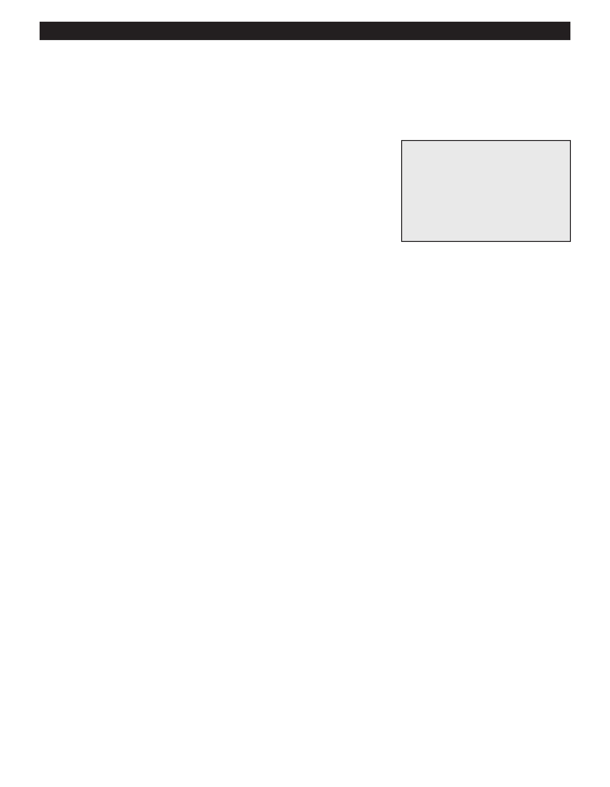

PA RT I C I PA N T R E S O U R C E G U I D E
Removing an Incandescent Fixture
If you need to test or fix an incandescent light fixture, the first step is to remove it safely
and with care.
Safety
Tools and Materials Needed
Make sure the power is off before you remove the fixture.
Lockout/tagout device
Use lockout/tagout procedures
Fiberglass ladder (if needed)
Circuit tester or multimeter
Use insulated tools.
Continuity tester or multimeter
Wear eye protection and rubber-soled shoes. Remove jewelry.
Insulated screwdriver
Be careful using a ladder.
Support the fixture as you remove it. Don’t let any parts on fall on you.
Notes:
58